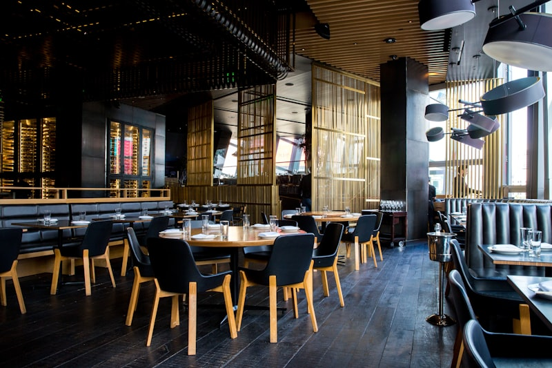
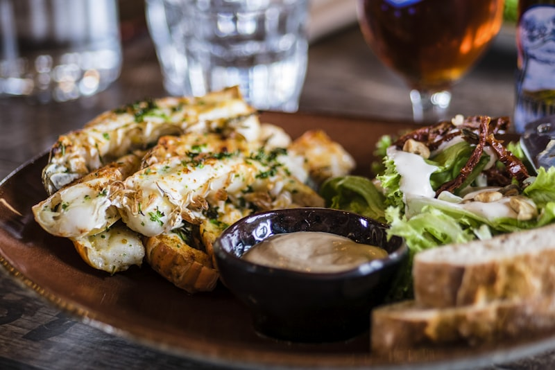
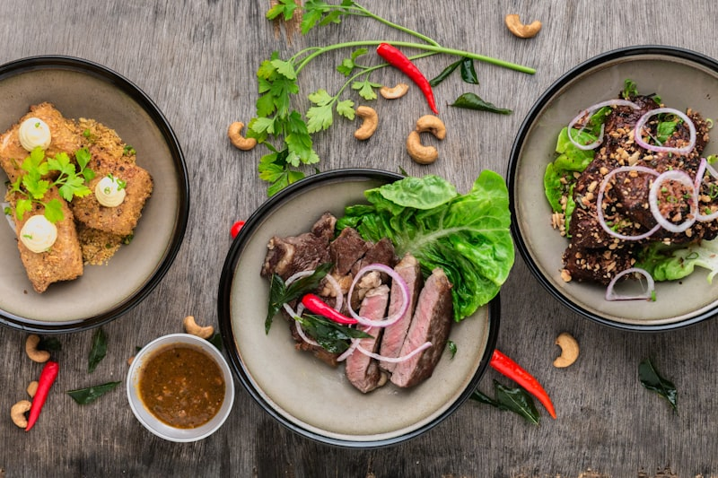
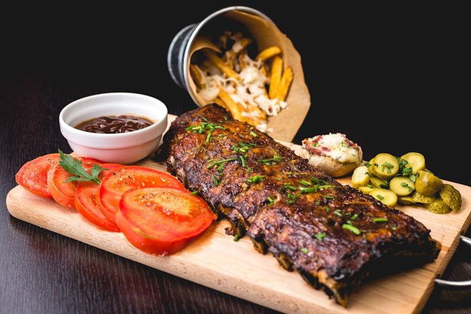
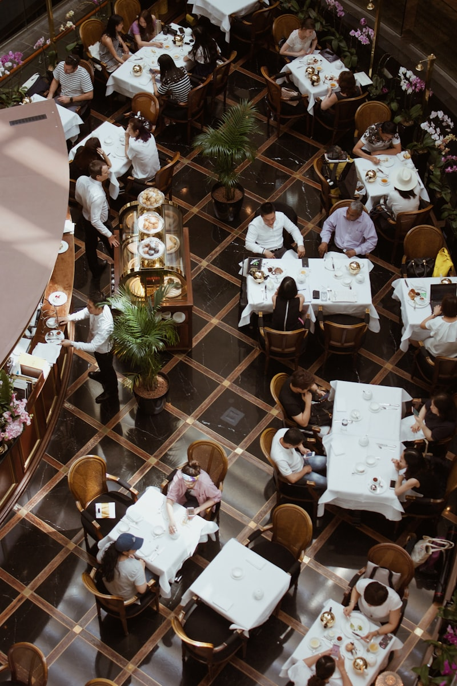
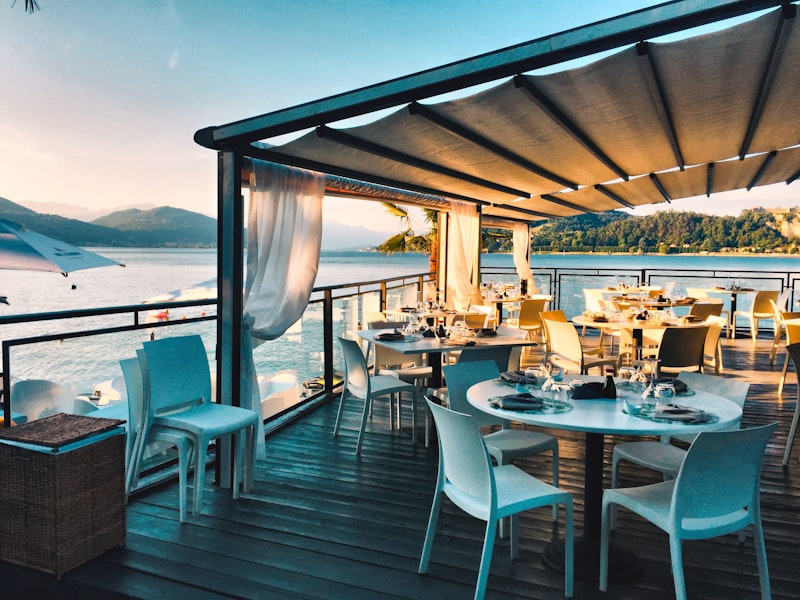
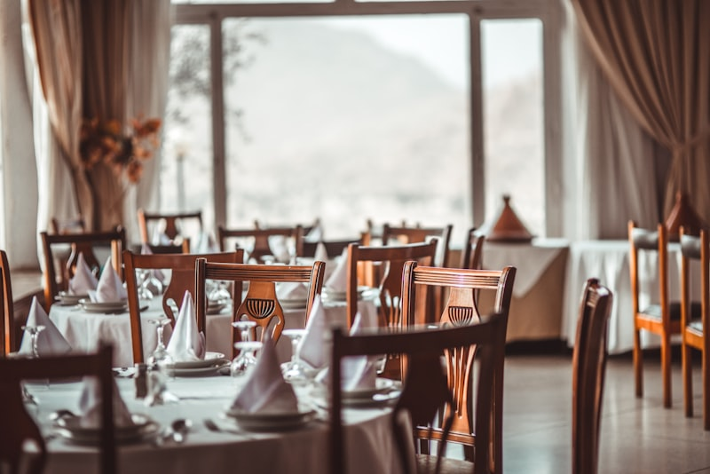

Notre Carte
Des plats généreux préparés avec passion et des produits frais

Découvrez une cuisine authentique et généreuse au cœur de la Plaine des Cafres. Buffet créole à volonté, grillades au feu de bois et privatisation pour vos événements jusqu'à 120 personnes.


Situé au cœur de la Plaine des Cafres, Le Relais Commerson vous invite à découvrir la richesse de la cuisine réunionnaise dans un cadre chaleureux et convivial. Notre restaurant allie tradition culinaire créole et savoir-faire artisanal pour vous offrir des repas mémorables.
Nous mettons un point d'honneur à travailler des produits frais, issus en grande partie de fermes locales de l'île. Notre cuisine au feu de bois confère à nos grillades et plats mijotés une saveur incomparable, dans le respect des méthodes artisanales.
Une expérience gastronomique complète pour tous vos moments de convivialité

Dégustez une grande variété de caris traditionnels, rougails savoureux et accompagnements typiques réunionnais. Un voyage gustatif au cœur des saveurs de l'île.
Voir le menu
Nos viandes et grillades sont cuites au feu de bois dans des marmites traditionnelles, offrant une saveur fumée incomparable qui ravira les amateurs d'authenticité.
Découvrir
Pour vos anniversaires, mariages, baptêmes ou repas d'entreprise, privatisez notre salle modulable pouvant accueillir jusqu'à 120 personnes dans un cadre naturel.
En savoir plusDes plats généreux préparés avec passion et des produits frais
Pour vos événements privés ou professionnels, Le Relais Commerson met à votre disposition une salle spacieuse et modulable dans un cadre naturel exceptionnel, proche du Piton de la Fournaise.

L'ambiance chaleureuse du Relais Commerson


Ce qu'ils disent de leur expérience au Relais Commerson
"Un buffet créole délicieux avec beaucoup de choix ! Le cadre est superbe et l'accueil très chaleureux. Idéal pour déjeuner après une randonnée au volcan."
"Nous avons privatisé le restaurant pour notre mariage, c'était parfait ! L'équipe a été au petit soin, le buffet était excellent et le cadre magnifique. Merci !"
"Les grillades au feu de bois sont une tuerie ! On sent vraiment la différence, la viande est tendre et parfumée. Je recommande vivement l'entrecôte."
Contactez-nous pour réserver votre table ou obtenir un devis pour la privatisation de notre restaurant.
37 Chemin Bois Joly Potier
97418 La Plaine des Cafres
Le Tampon, La Réunion
Réservez dès maintenant et venez découvrir la cuisine créole authentique du Relais Commerson